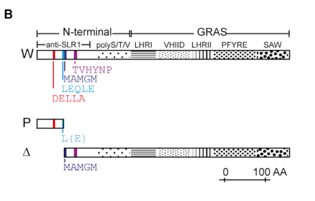

RHT-1 (Reduced height-1; Q9ST59) is the wheat DELLA protein, a member of the GRAS family, DELLA subfamily. It is the central NEGATIVE regulator (repressor) of the gibberellin (GA) signaling pathway. RHT-1 is a plant-specific GRAS-domain transcriptional regulator that acts largely by protein-protein interactions with transcription factors rather than by direct sequence-specific DNA binding, participating in nuclear complexes that repress transcription of GA-inducible, growth-promoting genes. In the canonical module, bioactive GA is perceived by the soluble receptor GID1; the GA-GID1 complex binds the conserved N-terminal DELLA/LExLE/TVHYNP region of RHT-1, promoting recruitment of an SCF E3 ubiquitin-ligase (via a GID2/SLY1-type F-box protein; in wheat TaGID2) and consequent ubiquitination and 26S-proteasome-mediated degradation of RHT-1, thereby relieving repression and permitting GA-stimulated growth. The protein has an N-terminal DELLA regulatory region (DELLA, LExLE/LEQLE and TVHYNP/VHYNP motifs, required for GID1 recognition and GA-induced degradation) and a C-terminal GRAS functional region (LHRI, VHIID, LHRII, PFYRE, SAW motifs) that contributes to repression and partner interactions. The wheat "Green Revolution" semi-dwarf alleles Rht-B1b and Rht-D1b carry premature stop codons in the N-terminal DELLA region; translational reinitiation yields N-terminally truncated DELLA proteins that lack the GID1-recognition region, become GA-insensitive, escape GA-triggered degradation and accumulate as constitutively active repressors of stem elongation. RHT-1's core, mechanistically defined role is therefore as a nuclear transcriptional repressor that negatively regulates GA-mediated signaling and growth. (UniProt Q9ST59; deep-research falcon report)
| GO Term | Evidence | Action | Reason |
|---|---|---|---|
|
GO:0005634
nucleus
|
IEA
GO_REF:0000044 |
ACCEPT |
Summary: IEA annotation from the UniProt Swiss-Prot subcellular-location keyword mapping. RHT-1 is a nuclear DELLA growth repressor, and nuclear localization is consistent with its role in transcriptional repression and with nuclear localization of its degradation machinery.
Reason: Correct and core to the gene's function. The UniProt entry states the subcellular location is Nucleus, and the deep-research synthesis reports direct experimental evidence for nuclear localization and nuclear pathway operation: the wheat SCF F-box proteins TaGID2 localize to the nucleus and interact there with RHT-1/DELLA proteins, consistent with nuclear SCF-mediated targeting of RHT-1. As a transcriptional repressor that acts in nuclear multiprotein complexes, the nuclear localization is the appropriate and core cellular-component annotation.
Supporting Evidence:
file:WHEAT/RHT1/RHT1-deep-research-falcon.md
Direct experimental evidence supports **nuclear localization and nuclear pathway operation**
file:WHEAT/RHT1/RHT1-deep-research-falcon.md
TaGID2s **interact with RHT-1/DELLA proteins** (reported by yeast two-hybrid, Western blot, and co-immunoprecipitation), consistent with nuclear SCF-mediated targeting of RHT-1.
|
|
GO:0009740
gibberellic acid mediated signaling pathway
|
IEA
GO_REF:0000043 |
MODIFY |
Summary: SPKW (GO_REF:0000043) annotation derived from the UniProt keyword "Gibberellin signaling pathway"; snapshot-only, removed in the current GOA release. RHT-1 is a DELLA protein - the defining central repressor of the gibberellin signaling pathway - so this term captures the gene's core biological process. After the keyword2GO retirement, RHT1 was left with essentially only "nucleus", i.e. its core functional annotation was lost.
Reason: GOA's removal of this annotation was NOT justified - this is a collateral-damage case in which a correct, CORE process annotation was lost. RHT-1 is the wheat DELLA protein, and DELLA proteins are THE central components of canonical GA signaling: bioactive gibberellin binds the GID1 receptor, the GA-GID1-DELLA complex forms, an SCF E3 ligase is recruited, and DELLA is ubiquitinated and degraded by the proteasome, releasing growth repression. UniProt explicitly states RHT-1 "acts as a repressor of the gibberellin (GA) signaling pathway" and "Upon GA application, it is degraded by the proteasome, allowing the GA signaling pathway." Participation in GA-mediated signaling is therefore unambiguously correct. However, the plain participation term is less precise than the biology warrants: DELLA acts specifically as a NEGATIVE regulator / repressor of the pathway. The annotation should be retained but MODIFIED to "negative regulation of gibberellic acid mediated signaling pathway" (GO:0009938), which precisely captures the DELLA repressor role. (The plain GO:0009740 would also be acceptable to re-assert as core; GO:0009938 is the more informative, recommended replacement.) Verdict: Tier A by keyword, but the removal verdict is LEGITIMATE/collateral-damage - the term is correct and should be re-asserted.
Proposed replacements:
negative regulation of gibberellic acid mediated signaling pathway
Supporting Evidence:
file:WHEAT/RHT1/RHT1-deep-research-falcon.md
RHT-1 acts as a **growth repressor** in GA signaling; degradation relieves repression
file:WHEAT/RHT1/RHT1-deep-research-falcon.md
bioactive **gibberellin (GA)** binds the receptor **GID1**, enabling formation of a **GA–GID1–DELLA** complex. This promotes recruitment of an SCF E3 ligase component (**GID2/SLY1-type F-box proteins**), resulting in DELLA **ubiquitination and proteasome-mediated degradation**, thereby releasing growth repression.
|
|
GO:0003714
transcription corepressor activity
|
IBA
file:WHEAT/RHT1/RHT1-deep-research-falcon.md |
NEW |
Summary: RHT-1/DELLA represses transcription of GA-inducible genes not by binding DNA in a sequence-specific manner but by interacting with transcription factors in nuclear complexes, the hallmark of a transcription corepressor. No MF annotation describing this repressor activity is present in current GOA.
Reason: DELLA proteins are well established to act "largely by protein-protein interactions with transcription factors (TFs) rather than by direct DNA binding". RHT-1 is a growth repressor that, with its C-terminal GRAS region (LHRI/VHIID/LHRII/PFYRE/SAW motifs), contributes to repression and partner interactions, and UniProt describes it as participating in large multiprotein complexes that repress transcription of GA-inducible genes. This is precisely the definition of transcription corepressor activity (GO:0003714: represses transcription via binding to a DNA-binding transcription factor, on its own or as part of a complex). The UniProt-derived IBA terms "DNA-binding transcription factor activity" (GO:0003700) and "sequence-specific DNA binding" (GO:0043565) over-state RHT-1 as a sequence-specific DNA-binding TF, which the current literature argues against for DELLA proteins; corepressor activity is the more accurate molecular function. IBA-level evidence is appropriate as this reflects conserved DELLA-family biology.
Supporting Evidence:
file:WHEAT/RHT1/RHT1-deep-research-falcon.md
RHT-1 proteins are DELLA growth repressors**: plant-specific GRAS-domain transcriptional regulators that act largely by **protein–protein interactions with transcription factors (TFs)** rather than by direct DNA binding.
file:WHEAT/RHT1/RHT1-deep-research-falcon.md
RHT-1 acts as a **growth repressor** in GA signaling; degradation relieves repression
|
|
GO:0009938
negative regulation of gibberellic acid mediated signaling pathway
|
IBA
file:WHEAT/RHT1/RHT1-deep-research-falcon.md |
NEW |
Summary: RHT-1/DELLA is the central NEGATIVE regulator of GA signaling: in the absence of GA it accumulates and represses GA responses, and GA triggers its degradation to relieve this repression. This is the precise process term recommended in place of the retired plain GO:0009740 SPKW annotation.
Reason: This NEW entry makes explicit the more precise process annotation proposed in the MODIFY of the retired SPKW term (GO:0009740). DELLA proteins are negative regulators / repressors of the GA signaling pathway: GA-bound GID1 binds the DELLA N-terminus, leading to SCF-mediated ubiquitination and proteasomal degradation of DELLA, and degradation relieves repression. The GA-insensitive Green Revolution alleles (Rht-B1b, Rht-D1b) accumulate as constitutively active repressors precisely because they escape this negative-regulation/degradation step ("reduced GA-triggered degradation due to loss of the N-terminus", "causing DELLA stabilization and constitutive repression of stem elongation"). GO:0009938 captures DELLA's defining role as the negative regulator of GA-mediated signaling and is more informative than the broad participation term GO:0009740. IBA is appropriate as this reflects conserved DELLA biology supported by wheat-specific allele data.
Supporting Evidence:
file:WHEAT/RHT1/RHT1-deep-research-falcon.md
RHT-1 acts as a **growth repressor** in GA signaling; degradation relieves repression
file:WHEAT/RHT1/RHT1-deep-research-falcon.md
Semi-dwarf alleles (Rht-B1b/Rht-D1b) can be explained mechanistically by **reduced GA-triggered degradation** due to loss of the N-terminus
file:WHEAT/RHT1/RHT1-deep-research-falcon.md
causing DELLA stabilization and constitutive repression of stem elongation (semi-dwarfism).
|
|
GO:0071370
cellular response to gibberellin stimulus
|
IBA
file:WHEAT/RHT1/RHT1-deep-research-falcon.md |
NEW |
Summary: RHT-1 is the direct molecular sensor/effector node that responds to bioactive GA: GA perception (via GID1) triggers RHT-1 ubiquitination and proteasomal degradation, changing the cell's transcriptional output. This captures the cellular GA-response role distinct from the broader signaling-pathway term.
Reason: RHT-1's stability is directly controlled by the cellular level of bioactive GA: GA binding to GID1 enables formation of the GA-GID1-DELLA complex, leading to SCF-mediated ubiquitination and proteasome-dependent degradation of RHT-1 and consequent de-repression of GA-inducible genes. The cell's response to a GA stimulus is enacted through RHT-1 degradation, so "cellular response to gibberellin stimulus" (GO:0071370) is an appropriate, well-supported process annotation. IBA is suitable given the conserved GA-GID1-DELLA mechanism and wheat-specific evidence that the GA-insensitive Rht alleles show reduced GA-triggered degradation.
Supporting Evidence:
file:WHEAT/RHT1/RHT1-deep-research-falcon.md
bioactive **gibberellin (GA)** binds the receptor **GID1**, enabling formation of a **GA–GID1–DELLA** complex. This promotes recruitment of an SCF E3 ligase component (**GID2/SLY1-type F-box proteins**), resulting in DELLA **ubiquitination and proteasome-mediated degradation**, thereby releasing growth repression.
file:WHEAT/RHT1/RHT1-deep-research-falcon.md
Semi-dwarf alleles (Rht-B1b/Rht-D1b) can be explained mechanistically by **reduced GA-triggered degradation** due to loss of the N-terminus
|
Q: Does wheat RHT-1 act exclusively as a transcription corepressor through protein-protein interactions, or does it also bind DNA in a sequence-specific manner at any GA-responsive promoters?
Suggested experts: Nicholas P. Harberd
Q: Which transcription factors and chromatin regulators form the GA-inducible-gene repressor complexes with RHT-1 in wheat, and how do the C-terminal GRAS motifs (PFYRE, SAW) mediate these interactions?
Suggested experts: Andrew L. Phillips
Experiment: Map the genome-wide binding sites and target genes of RHT-1 in wheat using ChIP-seq (or CUT&Tag) with an epitope-tagged RHT-1, comparing wild-type Rht-B1a with the GA-insensitive Rht-B1b allele, and intersect with GA-responsive transcriptomes.
Hypothesis: RHT-1 is recruited to GA-inducible growth genes indirectly via DNA-binding transcription factors and acts as a corepressor, rather than binding a specific DNA motif itself.
Type: chromatin immunoprecipitation / target identification
Experiment: Quantify RHT-1 protein abundance and ubiquitination kinetics after exogenous GA application in wild-type versus Rht-B1b/Rht-D1b lines, and test dependence on TaGID1/TaGID2, using cell-free degradation and in planta time-courses.
Hypothesis: GA-induced, GID1/GID2/SCF-dependent proteasomal degradation of RHT-1 is the rate- limiting de-repression step, and the Green Revolution alleles are stabilized because they escape this step.
Type: protein-stability / degradation assay
Experiment: Identify the full RHT-1 interactome in wheat nuclei (e.g. IP-MS) and validate candidate corepressor partners and transcription factors by Y2H, BiFC and co-IP, then test their genetic interaction with height phenotypes.
Hypothesis: RHT-1 represses GA responses as part of multiprotein nuclear complexes whose composition determines target-gene specificity and the magnitude of growth repression.
Type: interactome / protein-complex characterization
The research report should be a detailed narrative explaining the function, biological processes, and localization of the gene product. Citations should be given for all claims.
You should prioritize authoritative reviews and primary scientific literature when conducting research. You can supplement
this with annotations you find in gene/protein databases, but these can be outdated or inaccurate.
We are specifically interested in the primary function of the gene - for enzymes, what reaction is catalyzed, and what is the substrate specificity? For transporters, what is the substrate? For structural proteins or adapters, what is the broader structural role? For signaling molecules, what is the role in the pathway.
We are interested in where in or outside the cell the gene product carries out its function.
We are also interested in the signaling or biochemical pathways in which the gene functions. We are less interested in broad pleiotropic effects, except where these elucidate the precise role.
Include evidence where possible. We are interested in both experimental evidence as well as inference from structure, evolution, or bioinformatic analysis. Precise studies should be prioritized over high-throughput, where available.
The UniProt accession Q9ST59 corresponds to Triticum aestivum (bread wheat) Reduced height protein 1 (RHT‑1), a GRAS-family DELLA subfamily transcriptional regulator. It matches the canonical wheat semi-dwarfing loci Rht-A1, Rht-B1, and Rht-D1 that encode DELLA proteins underlying Green Revolution height control, and it carries the expected DELLA/GRAS motif architecture (N‑terminal DELLA regulatory motifs and C‑terminal GRAS motifs). (mo2018phenotypicandtranscriptomic pages 1-2, velde2021nterminaltruncatedrht1 pages 1-3, одинець2016компютернемоделюванняпросторової pages 1-3, santiago2025mappingproteinproteininteraction pages 14-17)
RHT-1 proteins are DELLA growth repressors: plant-specific GRAS-domain transcriptional regulators that act largely by protein–protein interactions with transcription factors (TFs) rather than by direct DNA binding. (mo2018phenotypicandtranscriptomic pages 1-2, velde2021nterminaltruncatedrht1 pages 1-3)
Wheat RHT-1/DELLA proteins have two functional regions:
- N-terminal DELLA regulatory region containing conserved motifs DELLA, LExLE/LEQLE, and TVHYNP/VHYNP, which are central for interaction with the gibberellin receptor GID1. (mo2018phenotypicandtranscriptomic pages 1-2, velde2021nterminaltruncatedrht1 pages 1-3, одинець2016компютернемоделюванняпросторової pages 1-3)
- C-terminal GRAS functional region containing conserved motifs including LHRI, VHIID, LHRII, PFYRE, and SAW, which contribute to repression functions and partner interactions. (mo2018phenotypicandtranscriptomic pages 1-2, velde2021nterminaltruncatedrht1 pages 1-3, santiago2025mappingproteinproteininteractiona pages 17-22)
The current model in wheat is consistent with the broader plant GA pathway: bioactive gibberellin (GA) binds the receptor GID1, enabling formation of a GA–GID1–DELLA complex. This promotes recruitment of an SCF E3 ligase component (GID2/SLY1-type F-box proteins), resulting in DELLA ubiquitination and proteasome-mediated degradation, thereby releasing growth repression. (mo2018phenotypicandtranscriptomic pages 1-2, santiago2025mappingproteinproteininteractiona pages 22-25, lou2016molecularcharacterizationof pages 15-16)
Mechanistic specificity in wheat includes evidence that (i) GID1–RHT1 binding depends on the N-terminal DELLA motifs, and (ii) TaGID2 recognition of RHT-1 involves the LHRII motif. (lou2016molecularcharacterizationof pages 15-16)
Direct experimental evidence supports nuclear localization and nuclear pathway operation:
- Wheat TaGID2 (GID2/SLY1 homologs) localize to the nucleus in transient expression assays (GFP/YFP fusions). (lou2016molecularcharacterizationof pages 15-16)
- TaGID2s interact with RHT-1/DELLA proteins (reported by yeast two-hybrid, Western blot, and co-immunoprecipitation), consistent with nuclear SCF-mediated targeting of RHT-1. (lou2016molecularcharacterizationof pages 15-16)
- Wheat TaGID2s interact with a Skp1 homolog (TSK1) in yeast, supporting incorporation into an SCF complex. (lou2016molecularcharacterizationof pages 15-16)
A 2023 study combined QTL mapping, transgenics, and transcriptomics to dissect the impact of the semi-dwarf Rht-B1b allele on wheat coleoptile length (CL) (Frontiers in Plant Science; published Mar 2023; https://doi.org/10.3389/fpls.2023.1147019). (xu2023impactof“green pages 1-2)
Key quantitative results:
- Two major coleoptile QTL at Rht-B1 (4BS) and Rht-D1 (4DS) explained 9.1%–22.2% of CL variance across environments; specifically the 4BS QTL (Rht-B1) explained ~19.7–22.2%, and the 4DS QTL explained ~11–13.2%. (xu2023impactof“green pages 3-6, xu2023impactof“green pages 1-2)
- Functional validation showed Rht-B1b overexpression reduced CL, while CRISPR/SpCas9 loss-of-function increased CL versus null controls. (xu2023impactof“green pages 3-6, xu2023impactof“green pages 1-2)
- A representative parental contrast reported CL ≈ 3.3 cm (Rht-B1b/Rht-D1b background) vs ≈ 4.8 cm (wild-type Rht-B1a/Rht-D1a). (xu2023impactof“green pages 1-2)
Interpretation: these experiments support a causal, directionally consistent role of the GA-insensitive DELLA allele in repressing early seedling elongation, helping explain the well-known emergence/early-vigor trade-offs of Green Revolution alleles. (xu2023impactof“green pages 3-6, xu2023impactof“green pages 1-2)
A 2024 Molecular Breeding study (published Nov 2024; https://doi.org/10.1007/s11032-024-01515-3) mapped an EMS-induced dwarf mutant to chromosome 4A and identified a novel allele Rht-A1h (missense G131A in the DELLA motif region). (xie2024mappingofdwarfing pages 11-13)
Key quantitative results:
- The allele explained up to 53% of plant-height variation in the mapping context and reduced height by up to 41.95%. (xie2024mappingofdwarfing pages 11-13)
- The mutant showed reduced sensitivity to exogenous GA relative to wild type, consistent with perturbed DELLA–GID1 regulation. (xie2024mappingofdwarfing pages 11-13)
Interpretation: beyond the classical Rht-B1b/D1b alleles, wheat breeding and functional genetics continue to uncover new DELLA variants with distinct quantitative effects and GA-response properties. (xie2024mappingofdwarfing pages 11-13)
Allele frequencies and diagnostic marker implementation (Pakistan historical cultivars)
A 2024 GWAS/preprint analyzed 199 historical Pakistani wheat cultivars (Aug 2024; https://doi.org/10.21203/rs.3.rs-4679366/v1). (suleman2024genomewideandcandidate pages 1-3)
Key quantitative results and practical tools:
- Reported allele frequency: Rht-B1b = 69.6%; Rht26 = 58.5%; rare Rht25 alleles at 1.5%, 1.0%, 0.5% for Rht25c/d/e, respectively. (suleman2024genomewideandcandidate pages 1-3)
- Reported height effects: Rht-D1b reduced plant height by 30.4% and Rht-B1b by 24.6% in this panel’s analysis. (suleman2024genomewideandcandidate pages 1-3)
- The study used diagnostic KASP markers for multiple Rht loci and developed a new KASP marker for Rht-B1p, illustrating active translation into breeding pipelines. (suleman2024genomewideandcandidate pages 1-3)
Multi-environment GWAS and yield trade-off evidence (Nordic–Baltic spring wheat)
A 2024 Frontiers in Plant Science study (published Jun 2024; https://doi.org/10.3389/fpls.2024.1393170) analyzed 299 spring wheat genotypes across 12 year-site trials (2021–2023 phenotypes combined). (aleliunas2024genomewideassociationstudy pages 1-2)
Key quantitative results:
- The strongest DELLA-linked plant-height markers explained up to 17.95% (chr4B within Rht-B1) and 29.16% (chr4D within Rht-D1) of phenotypic variance for plant height, with low minor-allele frequencies (~0.07). (aleliunas2024genomewideassociationstudy pages 7-10)
- Critically for “real-world” deployment, the authors reported no beneficial grain-yield effect of the semi-dwarf alleles Rht-B1b and Rht-D1b across the 12 tested trials; cultivars carrying these alleles were generally low yielding in that germplasm set. (aleliunas2024genomewideassociationstudy pages 1-2)
Interpretation: these 2024 datasets reinforce that the agronomic value of Rht-B1/Rht-D1 DELLA alleles is context dependent, motivating diversification toward alternative dwarfing alleles and ideotypes. (aleliunas2024genomewideassociationstudy pages 1-2, suleman2024genomewideandcandidate pages 1-3)
The canonical Green Revolution alleles Rht-B1b and Rht-D1b contain early nonsense mutations that yield N-terminally truncated DELLA proteins via translational reinitiation, rather than only short peptides. The truncated products lack the N-terminal DELLA/LEQLE/TVHYNP region required for GID1-mediated recognition and degradation, causing DELLA stabilization and constitutive repression of stem elongation (semi-dwarfism). (velde2021nterminaltruncatedrht1 pages 1-3, velde2021nterminaltruncatedrht1 media 2cec272f)
Modern wheat improvement routinely tracks dwarfing alleles using molecular markers. A recent example is explicit KASP-based genotyping across multiple Rht loci, plus development of a dedicated KASP marker for Rht-B1p (Aug 2024 preprint; https://doi.org/10.21203/rs.3.rs-4679366/v1). (suleman2024genomewideandcandidate pages 1-3)
The 2023 Rht-B1b study demonstrates a complete “research-to-implementation” style workflow: QTL mapping to Rht loci, transgenic overexpression, CRISPR knockout, and RNA-seq to identify pathways that may be used to design ideotypes with improved emergence/early vigor (Mar 2023; https://doi.org/10.3389/fpls.2023.1147019). (xu2023impactof“green pages 3-6, xu2023impactof“green pages 1-2)
Multi-environment evaluation remains central: in Nordic–Baltic trials, semi-dwarf Rht alleles were not associated with yield gains across 12 trials (Jun 2024; https://doi.org/10.3389/fpls.2024.1393170), illustrating that RHT1 allele selection may need to be tailored to water, temperature, and agronomic input regimes. (aleliunas2024genomewideassociationstudy pages 1-2)
The following table summarizes identity, alleles, mechanisms, and recent quantitative evidence.
| Category | Item | Key details | Evidence / quantitative notes | Citation |
|---|---|---|---|---|
| Identifier / protein | RHT-1 (UniProt Q9ST59) | Wheat DELLA protein of the GRAS family; corresponds to Reduced height 1 proteins encoded by homeologous loci Rht-A1, Rht-B1, Rht-D1 in Triticum aestivum | Canonical DELLA architecture verified for wheat RHT-1 proteins; Rht-B1/Rht-D1 are Green Revolution loci | (mo2018phenotypicandtranscriptomic pages 1-2, velde2021nterminaltruncatedrht1 pages 1-3, одинець2016компютернемоделюванняпросторової pages 1-3, santiago2025mappingproteinproteininteraction pages 14-17) |
| Domain architecture | N-terminal DELLA regulatory region | Conserved motifs DELLA, LExLE/LEQLE, TVHYNP/VHYNP; required for GA receptor GID1 recognition | Loss/disruption of these motifs prevents normal GA-triggered degradation | (mo2018phenotypicandtranscriptomic pages 1-2, velde2021nterminaltruncatedrht1 pages 1-3, одинець2016компютернемоделюванняпросторової pages 1-3, santiago2025mappingproteinproteininteractiona pages 22-25) |
| Domain architecture | C-terminal GRAS region | Conserved motifs LHRI, VHIID, LHRII, PFYRE, SAW; functional repression / partner interaction region | PFYRE and SAW motifs implicated in DELLA activity and partner interactions | (mo2018phenotypicandtranscriptomic pages 1-2, santiago2025mappingproteinproteininteraction pages 17-22, santiago2025mappingproteinproteininteractiona pages 17-22) |
| Mechanism | GA–GID1–DELLA module | GA-bound GID1 binds DELLA N-terminus, enabling SCF E3 ligase recruitment, ubiquitination, and proteasomal DELLA degradation | RHT-1 acts as a growth repressor in GA signaling; degradation relieves repression | (mo2018phenotypicandtranscriptomic pages 1-2, santiago2025mappingproteinproteininteractiona pages 22-25) |
| Key allele | Rht-B1b | Premature stop codon in N-terminal region; produces N-terminally truncated DELLA via translational reinitiation | Truncated protein lacks DELLA/TVHYNP-type motifs, fails normal GID1-mediated degradation, causing GA-insensitive semi-dwarfism; reduces coleoptile length; in a 245-line RIL population, the 4BS coleoptile QTL explained ~19.7–22.2% variance (9.1–22.2% across environments); parent CL example: ~3.3 cm (Rht-B1b/Rht-D1b) vs ~4.8 cm wild type; literature cited in 2024 work notes ~24.6% PH reduction in one panel and ~23% stem-length reduction in prior studies | (velde2021nterminaltruncatedrht1 pages 1-3, xu2023impactof“green pages 3-6, xu2023impactof“green pages 1-2, suleman2024genomewideandcandidate pages 1-3) |
| Key allele | Rht-D1b | Green Revolution semi-dwarf allele producing N-terminally truncated DELLA | GA-insensitive because truncated DELLA cannot be properly recognized/degraded via GID1 pathway; 4DS coleoptile QTL explained ~11–13.2% variance in the 2023 study; one 2024 panel reported ~30.4% PH reduction; Nordic–Baltic GWAS detected a chr4D DELLA marker explaining up to 29.16% PH variance | (velde2021nterminaltruncatedrht1 pages 1-3, xu2023impactof“green pages 3-6, suleman2024genomewideandcandidate pages 1-3, aleliunas2024genomewideassociationstudy pages 7-10) |
| Key allele | Rht-B1c | 508-nt insertion causing a 30-aa insertion in the DELLA domain | Abolishes/strongly impairs GID1 interaction; stable accumulation across tissues; produces a severe dwarf phenotype stronger than Rht-B1b/D1b | (santiago2025mappingproteinproteininteractiona pages 22-25, santiago2025mappingproteinproteininteractionb pages 22-25) |
| Key allele | Rht-A1h | 2024 novel allele; G131A missense in the DELLA motif region | Co-segregated with major chr4A QTL; reduced GA sensitivity consistent with altered DELLA–GID1 interaction; explained up to 53% of PH variation and reduced height by up to 41.95% | (xie2024mappingofdwarfing pages 11-13) |
| Key allele | RHT-B1bE529K | EMS-induced missense change in the PFYRE motif; hypomorphic suppressor of Rht-B1b | Partially suppresses semi-dwarfism; increased height by 19 cm (~21%) vs RHT-B1b, compared with 33 cm (~34%) for RHT-B1a vs RHT-B1b; increased coleoptile/seedling shoot/internode lengths without significant yield-component penalties in that study | (mo2018phenotypicandtranscriptomic pages 1-2) |
| 2023–2024 application | CRISPR/SpCas9 knockout of Rht-B1b | Functional validation of Rht-B1b in coleoptile development | Rht-B1b-KO increased coleoptile length relative to null transgenic plants | (xu2023impactof“green pages 3-6, xu2023impactof“green pages 1-2) |
| 2023–2024 application | Rht-B1b overexpression | Gain-of-function transgenic validation | Overexpression reduced coleoptile length, supporting direct repression of elongation by the semi-dwarf DELLA allele | (xu2023impactof“green pages 3-6, xu2023impactof“green pages 1-2) |
| 2023–2024 application | KASP marker deployment | Diagnostic KASP markers used for Rht-B1, Rht-D1, Rht13, Rht25, Rht26; a new Rht-B1p KASP marker was developed in 2024 | In 199 Pakistani cultivars, Rht-B1b frequency = 69.6%; Rht26 = 58.5%; rare Rht25c/d/e frequencies 1.5%, 1.0%, 0.5% | (suleman2024genomewideandcandidate pages 1-3) |
| 2024 breeding / population evidence | Yield and deployment context | Semi-dwarf DELLA alleles remain major breeding loci but can be environment-dependent | In a 299-genotype Nordic–Baltic spring wheat panel across 12 trials, no beneficial grain-yield effect of Rht-B1b/Rht-D1b was observed; carriers were generally low yielding in that germplasm; in the same study, chr4B and chr4D DELLA markers explained up to 17.95% and 29.16% of PH variance, respectively | (aleliunas2024genomewideassociationstudy pages 7-10, aleliunas2024genomewideassociationstudy pages 11-13, aleliunas2024genomewideassociationstudy pages 1-2) |
Table: This table compacts the identity, domain structure, major alleles, mechanisms, phenotypic effects, and recent 2023-2024 applications for wheat RHT-1/DELLA proteins. It is useful as a quick reference linking molecular lesions to GA-signaling consequences and breeding-relevant quantitative outcomes.
A schematic of translational reinitiation producing N-terminally truncated ΔRHT-1 proteins for Rht-B1b/Rht-D1b is provided in Van De Velde et al. (Molecular Plant, Apr 2021; https://doi.org/10.1016/j.molp.2021.01.002). (velde2021nterminaltruncatedrht1 media 2cec272f)
References
(mo2018phenotypicandtranscriptomic pages 1-2): Youngjun Mo, Stephen Pearce, and Jorge Dubcovsky. Phenotypic and transcriptomic characterization of a wheat tall mutant carrying an induced mutation in the c-terminal pfyre motif of rht-b1b. BMC Plant Biology, Oct 2018. URL: https://doi.org/10.1186/s12870-018-1465-4, doi:10.1186/s12870-018-1465-4. This article has 25 citations and is from a peer-reviewed journal.
(velde2021nterminaltruncatedrht1 pages 1-3): Karel Van De Velde, Stephen G. Thomas, Floor Heyse, Rim Kaspar, Dominique Van Der Straeten, and Antje Rohde. N-terminal truncated rht-1 proteins generated by translational reinitiation cause semi-dwarfing of wheat green revolution alleles. Molecular Plant, 14:679-687, Apr 2021. URL: https://doi.org/10.1016/j.molp.2021.01.002, doi:10.1016/j.molp.2021.01.002. This article has 121 citations and is from a highest quality peer-reviewed journal.
(одинець2016компютернемоделюванняпросторової pages 1-3): КО Одинець and ОІ Корнелюк. Комп'ютерне моделювання просторової структури білка-модулятора гіберелінової відповіді rht-1 triticum aestivum l. з родини della-gras білків. Unknown journal, 2016.
(santiago2025mappingproteinproteininteraction pages 14-17): L Santiago. Mapping protein-protein interaction domains in wheat rht-d1. Unknown journal, 2025.
(santiago2025mappingproteinproteininteractiona pages 17-22): L Santiago. Mapping protein-protein interaction domains in wheat rht-d1. Unknown journal, 2025.
(santiago2025mappingproteinproteininteractiona pages 22-25): L Santiago. Mapping protein-protein interaction domains in wheat rht-d1. Unknown journal, 2025.
(lou2016molecularcharacterizationof pages 15-16): XueYuan Lou, Xin Li, AiXia Li, MingYu Pu, Muhammad Shoaib, DongCheng Liu, JiaZhu Sun, AiMin Zhang, and WenLong Yang. Molecular characterization of three gibberellin-insensitive dwarf2 homologous genes in common wheat. PLoS ONE, 11:e0157642, Jun 2016. URL: https://doi.org/10.1371/journal.pone.0157642, doi:10.1371/journal.pone.0157642. This article has 19 citations and is from a peer-reviewed journal.
(santiago2025mappingproteinproteininteraction pages 22-25): L Santiago. Mapping protein-protein interaction domains in wheat rht-d1. Unknown journal, 2025.
(santiago2025mappingproteinproteininteractionb pages 22-25): L Santiago. Mapping protein-protein interaction domains in wheat rht-d1. Unknown journal, 2025.
(xu2023impactof“green pages 1-2): Dengan Xu, Qianlin Hao, Tingzhi Yang, Xinru Lv, Huimin Qin, Yalin Wang, Chenfei Jia, Wenxing Liu, Xuehuan Dai, Jianbin Zeng, Hongsheng Zhang, Zhonghu He, Xianchun Xia, Shuanghe Cao, and Wujun Ma. Impact of “green revolution” gene rht-b1b on coleoptile length of wheat. Frontiers in Plant Science, Mar 2023. URL: https://doi.org/10.3389/fpls.2023.1147019, doi:10.3389/fpls.2023.1147019. This article has 14 citations.
(xu2023impactof“green pages 3-6): Dengan Xu, Qianlin Hao, Tingzhi Yang, Xinru Lv, Huimin Qin, Yalin Wang, Chenfei Jia, Wenxing Liu, Xuehuan Dai, Jianbin Zeng, Hongsheng Zhang, Zhonghu He, Xianchun Xia, Shuanghe Cao, and Wujun Ma. Impact of “green revolution” gene rht-b1b on coleoptile length of wheat. Frontiers in Plant Science, Mar 2023. URL: https://doi.org/10.3389/fpls.2023.1147019, doi:10.3389/fpls.2023.1147019. This article has 14 citations.
(xie2024mappingofdwarfing pages 11-13): Xiaomei Xie, Yang Zhang, Le Xu, Hong-chun Xiong, Yong-dun Xie, Lin-shu Zhao, Jia-yu Gu, Huiyuan Li, Jinfeng Zhang, Yuping Ding, Shi-rong Zhao, Hui Guo, and Luxiang Liu. Mapping of dwarfing gene and identification of mutant allele on plant height in wheat. Molecular Breeding : New Strategies in Plant Improvement, Nov 2024. URL: https://doi.org/10.1007/s11032-024-01515-3, doi:10.1007/s11032-024-01515-3. This article has 6 citations.
(suleman2024genomewideandcandidate pages 1-3): Hafiz Muhammad Suleman, Humaira Qayyum, Sana ur-Rehman, Khawar Majeed, Misbah Mukhtar, Saima Zulfiqar, Zahid Mahmood, Abdul Aziz, Muhammad Fayyaz, Shuanghe Cao, Awais Rasheed, and Zhonghu He. Genome-wide and candidate gene association mapping for plant height in wheat. Aug 2024. URL: https://doi.org/10.21203/rs.3.rs-4679366/v1, doi:10.21203/rs.3.rs-4679366/v1.
(aleliunas2024genomewideassociationstudy pages 1-2): Andrius Aleliūnas, Andrii Gorash, Rita Armonienė, Ilmar Tamm, Anne Ingver, Māra Bleidere, Valentīna Fetere, Hannes Kollist, Tomasz Mroz, Morten Lillemo, and Gintaras Brazauskas. Genome-wide association study reveals 18 qtl for major agronomic traits in a nordic–baltic spring wheat germplasm. Frontiers in Plant Science, Jun 2024. URL: https://doi.org/10.3389/fpls.2024.1393170, doi:10.3389/fpls.2024.1393170. This article has 11 citations.
(aleliunas2024genomewideassociationstudy pages 7-10): Andrius Aleliūnas, Andrii Gorash, Rita Armonienė, Ilmar Tamm, Anne Ingver, Māra Bleidere, Valentīna Fetere, Hannes Kollist, Tomasz Mroz, Morten Lillemo, and Gintaras Brazauskas. Genome-wide association study reveals 18 qtl for major agronomic traits in a nordic–baltic spring wheat germplasm. Frontiers in Plant Science, Jun 2024. URL: https://doi.org/10.3389/fpls.2024.1393170, doi:10.3389/fpls.2024.1393170. This article has 11 citations.
(velde2021nterminaltruncatedrht1 media 2cec272f): Karel Van De Velde, Stephen G. Thomas, Floor Heyse, Rim Kaspar, Dominique Van Der Straeten, and Antje Rohde. N-terminal truncated rht-1 proteins generated by translational reinitiation cause semi-dwarfing of wheat green revolution alleles. Molecular Plant, 14:679-687, Apr 2021. URL: https://doi.org/10.1016/j.molp.2021.01.002, doi:10.1016/j.molp.2021.01.002. This article has 121 citations and is from a highest quality peer-reviewed journal.
(santiago2025mappingproteinproteininteraction pages 17-22): L Santiago. Mapping protein-protein interaction domains in wheat rht-d1. Unknown journal, 2025.
(aleliunas2024genomewideassociationstudy pages 11-13): Andrius Aleliūnas, Andrii Gorash, Rita Armonienė, Ilmar Tamm, Anne Ingver, Māra Bleidere, Valentīna Fetere, Hannes Kollist, Tomasz Mroz, Morten Lillemo, and Gintaras Brazauskas. Genome-wide association study reveals 18 qtl for major agronomic traits in a nordic–baltic spring wheat germplasm. Frontiers in Plant Science, Jun 2024. URL: https://doi.org/10.3389/fpls.2024.1393170, doi:10.3389/fpls.2024.1393170. This article has 11 citations.

id: Q9ST59
gene_symbol: RHT1
product_type: PROTEIN
status: COMPLETE
taxon:
id: NCBITaxon:4565
label: Triticum aestivum
description: >
RHT-1 (Reduced height-1; Q9ST59) is the wheat DELLA protein, a member of the GRAS family,
DELLA subfamily. It is the central NEGATIVE regulator (repressor) of the gibberellin (GA)
signaling pathway. RHT-1 is a plant-specific GRAS-domain transcriptional regulator that acts
largely by protein-protein interactions with transcription factors rather than by direct
sequence-specific DNA binding, participating in nuclear complexes that repress transcription
of GA-inducible, growth-promoting genes. In the canonical module, bioactive GA is perceived by
the soluble receptor GID1; the GA-GID1 complex binds the conserved N-terminal DELLA/LExLE/TVHYNP
region of RHT-1, promoting recruitment of an SCF E3 ubiquitin-ligase (via a GID2/SLY1-type F-box
protein; in wheat TaGID2) and consequent ubiquitination and 26S-proteasome-mediated degradation
of RHT-1, thereby relieving repression and permitting GA-stimulated growth. The protein has an
N-terminal DELLA regulatory region (DELLA, LExLE/LEQLE and TVHYNP/VHYNP motifs, required for
GID1 recognition and GA-induced degradation) and a C-terminal GRAS functional region (LHRI,
VHIID, LHRII, PFYRE, SAW motifs) that contributes to repression and partner interactions. The
wheat "Green Revolution" semi-dwarf alleles Rht-B1b and Rht-D1b carry premature stop codons in
the N-terminal DELLA region; translational reinitiation yields N-terminally truncated DELLA
proteins that lack the GID1-recognition region, become GA-insensitive, escape GA-triggered
degradation and accumulate as constitutively active repressors of stem elongation. RHT-1's
core, mechanistically defined role is therefore as a nuclear transcriptional repressor that
negatively regulates GA-mediated signaling and growth. (UniProt Q9ST59; deep-research falcon
report)
existing_annotations:
# --- Current GOA annotations (2026 release) ---
- term:
id: GO:0005634
label: nucleus
evidence_type: IEA
original_reference_id: GO_REF:0000044
qualifier: located_in
review:
summary: >
IEA annotation from the UniProt Swiss-Prot subcellular-location keyword mapping. RHT-1 is
a nuclear DELLA growth repressor, and nuclear localization is consistent with its role in
transcriptional repression and with nuclear localization of its degradation machinery.
action: ACCEPT
reason: >
Correct and core to the gene's function. The UniProt entry states the subcellular location
is Nucleus, and the deep-research synthesis reports direct experimental evidence for nuclear
localization and nuclear pathway operation: the wheat SCF F-box proteins TaGID2 localize to
the nucleus and interact there with RHT-1/DELLA proteins, consistent with nuclear
SCF-mediated targeting of RHT-1. As a transcriptional repressor that acts in nuclear
multiprotein complexes, the nuclear localization is the appropriate and core
cellular-component annotation.
supported_by:
- reference_id: file:WHEAT/RHT1/RHT1-deep-research-falcon.md
supporting_text: "Direct experimental evidence supports **nuclear localization and nuclear
pathway operation**"
- reference_id: file:WHEAT/RHT1/RHT1-deep-research-falcon.md
supporting_text: "TaGID2s **interact with RHT-1/DELLA proteins** (reported by yeast
two-hybrid, Western blot, and co-immunoprecipitation), consistent with nuclear
SCF-mediated targeting of RHT-1."
# --- SPKW keyword-mapping annotation (GO_REF:0000043) ---
# Present in the Sept 2025 goa_uniprot_gcrp snapshot (SwissProt keyword "Gibberellin signaling
# pathway"); REMOVED from the current (2026) GOA release when GOA retired the keyword2GO
# pipeline for cellular organisms. Reviewed retrospectively to assess whether removal was
# justified. This is the TRUE SPKW-unique term for RHT1. (The UniProt DR line still shows it as
# GO:0009740 P:gibberellic acid mediated signaling pathway; IEA:UniProtKB-KW.)
- term:
id: GO:0009740
label: gibberellic acid mediated signaling pathway
evidence_type: IEA
original_reference_id: GO_REF:0000043
retired: true
review:
summary: >
SPKW (GO_REF:0000043) annotation derived from the UniProt keyword "Gibberellin signaling
pathway"; snapshot-only, removed in the current GOA release. RHT-1 is a DELLA protein - the
defining central repressor of the gibberellin signaling pathway - so this term captures the
gene's core biological process. After the keyword2GO retirement, RHT1 was left with
essentially only "nucleus", i.e. its core functional annotation was lost.
action: MODIFY
reason: >
GOA's removal of this annotation was NOT justified - this is a collateral-damage case in
which a correct, CORE process annotation was lost. RHT-1 is the wheat DELLA protein, and
DELLA proteins are THE central components of canonical GA signaling: bioactive gibberellin
binds the GID1 receptor, the GA-GID1-DELLA complex forms, an SCF E3 ligase is recruited,
and DELLA is ubiquitinated and degraded by the proteasome, releasing growth repression.
UniProt explicitly states RHT-1 "acts as a repressor of the gibberellin (GA) signaling
pathway" and "Upon GA application, it is degraded by the proteasome, allowing the GA
signaling pathway." Participation in GA-mediated signaling is therefore unambiguously
correct. However, the plain participation term is less precise than the biology warrants:
DELLA acts specifically as a NEGATIVE regulator / repressor of the pathway. The annotation
should be retained but MODIFIED to "negative regulation of gibberellic acid mediated
signaling pathway" (GO:0009938), which precisely captures the DELLA repressor role. (The
plain GO:0009740 would also be acceptable to re-assert as core; GO:0009938 is the more
informative, recommended replacement.) Verdict: Tier A by keyword, but the removal verdict
is LEGITIMATE/collateral-damage - the term is correct and should be re-asserted.
proposed_replacement_terms:
- id: GO:0009938
label: negative regulation of gibberellic acid mediated signaling pathway
supported_by:
- reference_id: file:WHEAT/RHT1/RHT1-deep-research-falcon.md
supporting_text: "RHT-1 acts as a **growth repressor** in GA signaling; degradation relieves
repression"
- reference_id: file:WHEAT/RHT1/RHT1-deep-research-falcon.md
supporting_text: "bioactive **gibberellin (GA)** binds the receptor **GID1**, enabling
formation of a **GA–GID1–DELLA** complex. This promotes recruitment of an SCF E3 ligase
component (**GID2/SLY1-type F-box proteins**), resulting in DELLA **ubiquitination and
proteasome-mediated degradation**, thereby releasing growth repression."
# --- NEW annotations proposed from the literature / UniProt ---
- term:
id: GO:0003714
label: transcription corepressor activity
evidence_type: IBA
original_reference_id: file:WHEAT/RHT1/RHT1-deep-research-falcon.md
review:
summary: >
RHT-1/DELLA represses transcription of GA-inducible genes not by binding DNA in a
sequence-specific manner but by interacting with transcription factors in nuclear
complexes, the hallmark of a transcription corepressor. No MF annotation describing this
repressor activity is present in current GOA.
action: NEW
reason: >
DELLA proteins are well established to act "largely by protein-protein interactions with
transcription factors (TFs) rather than by direct DNA binding". RHT-1 is a growth repressor
that, with its C-terminal GRAS region (LHRI/VHIID/LHRII/PFYRE/SAW motifs), contributes to
repression and partner interactions, and UniProt describes it as participating in large
multiprotein complexes that repress transcription of GA-inducible genes. This is precisely
the definition of transcription corepressor activity (GO:0003714: represses transcription
via binding to a DNA-binding transcription factor, on its own or as part of a complex). The
UniProt-derived IBA terms "DNA-binding transcription factor activity" (GO:0003700) and
"sequence-specific DNA binding" (GO:0043565) over-state RHT-1 as a sequence-specific
DNA-binding TF, which the current literature argues against for DELLA proteins; corepressor
activity is the more accurate molecular function. IBA-level evidence is appropriate as this
reflects conserved DELLA-family biology.
supported_by:
- reference_id: file:WHEAT/RHT1/RHT1-deep-research-falcon.md
supporting_text: "RHT-1 proteins are DELLA growth repressors**: plant-specific GRAS-domain
transcriptional regulators that act largely by **protein–protein interactions with
transcription factors (TFs)** rather than by direct DNA binding."
- reference_id: file:WHEAT/RHT1/RHT1-deep-research-falcon.md
supporting_text: "RHT-1 acts as a **growth repressor** in GA signaling; degradation relieves
repression"
- term:
id: GO:0009938
label: negative regulation of gibberellic acid mediated signaling pathway
evidence_type: IBA
original_reference_id: file:WHEAT/RHT1/RHT1-deep-research-falcon.md
review:
summary: >
RHT-1/DELLA is the central NEGATIVE regulator of GA signaling: in the absence of GA it
accumulates and represses GA responses, and GA triggers its degradation to relieve this
repression. This is the precise process term recommended in place of the retired plain
GO:0009740 SPKW annotation.
action: NEW
reason: >
This NEW entry makes explicit the more precise process annotation proposed in the MODIFY of
the retired SPKW term (GO:0009740). DELLA proteins are negative regulators / repressors of
the GA signaling pathway: GA-bound GID1 binds the DELLA N-terminus, leading to SCF-mediated
ubiquitination and proteasomal degradation of DELLA, and degradation relieves repression.
The GA-insensitive Green Revolution alleles (Rht-B1b, Rht-D1b) accumulate as constitutively
active repressors precisely because they escape this negative-regulation/degradation step
("reduced GA-triggered degradation due to loss of the N-terminus", "causing DELLA
stabilization and constitutive repression of stem elongation"). GO:0009938 captures DELLA's
defining role as the negative regulator of GA-mediated signaling and is more informative
than the broad participation term GO:0009740. IBA is appropriate as this reflects conserved
DELLA biology supported by wheat-specific allele data.
supported_by:
- reference_id: file:WHEAT/RHT1/RHT1-deep-research-falcon.md
supporting_text: "RHT-1 acts as a **growth repressor** in GA signaling; degradation relieves
repression"
- reference_id: file:WHEAT/RHT1/RHT1-deep-research-falcon.md
supporting_text: "Semi-dwarf alleles (Rht-B1b/Rht-D1b) can be explained mechanistically by
**reduced GA-triggered degradation** due to loss of the N-terminus"
- reference_id: file:WHEAT/RHT1/RHT1-deep-research-falcon.md
supporting_text: "causing DELLA stabilization and constitutive repression of stem elongation
(semi-dwarfism)."
- term:
id: GO:0071370
label: cellular response to gibberellin stimulus
evidence_type: IBA
original_reference_id: file:WHEAT/RHT1/RHT1-deep-research-falcon.md
review:
summary: >
RHT-1 is the direct molecular sensor/effector node that responds to bioactive GA: GA
perception (via GID1) triggers RHT-1 ubiquitination and proteasomal degradation, changing
the cell's transcriptional output. This captures the cellular GA-response role distinct
from the broader signaling-pathway term.
action: NEW
reason: >
RHT-1's stability is directly controlled by the cellular level of bioactive GA: GA binding
to GID1 enables formation of the GA-GID1-DELLA complex, leading to SCF-mediated
ubiquitination and proteasome-dependent degradation of RHT-1 and consequent de-repression
of GA-inducible genes. The cell's response to a GA stimulus is enacted through RHT-1
degradation, so "cellular response to gibberellin stimulus" (GO:0071370) is an appropriate,
well-supported process annotation. IBA is suitable given the conserved GA-GID1-DELLA
mechanism and wheat-specific evidence that the GA-insensitive Rht alleles show reduced
GA-triggered degradation.
supported_by:
- reference_id: file:WHEAT/RHT1/RHT1-deep-research-falcon.md
supporting_text: "bioactive **gibberellin (GA)** binds the receptor **GID1**, enabling
formation of a **GA–GID1–DELLA** complex. This promotes recruitment of an SCF E3 ligase
component (**GID2/SLY1-type F-box proteins**), resulting in DELLA **ubiquitination and
proteasome-mediated degradation**, thereby releasing growth repression."
- reference_id: file:WHEAT/RHT1/RHT1-deep-research-falcon.md
supporting_text: "Semi-dwarf alleles (Rht-B1b/Rht-D1b) can be explained mechanistically by
**reduced GA-triggered degradation** due to loss of the N-terminus"
references:
- id: Q9ST59
title: UniProtKB - Q9ST59 (RHT1_WHEAT) DELLA protein RHT-1, Triticum aestivum.
findings:
- statement: UniProt FUNCTION - probable transcriptional regulator that acts as a repressor of
the gibberellin (GA) signaling pathway, probably acting by participating in large
multiprotein complexes that repress transcription of GA-inducible genes; upon GA
application it is degraded by the proteasome, allowing the GA signaling pathway.
- statement: Subcellular location is nucleus; the DELLA motif is required for GA-induced
degradation; the protein is phosphorylated and ubiquitinated.
- statement: Belongs to the GRAS family, DELLA subfamily, with a C-terminal GRAS domain and an
N-terminal DELLA regulatory region; the Green Revolution semi-dwarf alleles Rht-B1b and
Rht-D1b carry N-terminal deletions/truncations.
- id: GO_REF:0000043
title: Gene Ontology annotation based on UniProtKB/Swiss-Prot keyword mapping
findings:
- statement: SwissProt keyword-derived (SPKW) annotation present in the Sept 2025
goa_uniprot_gcrp snapshot but removed from the current GOA release after GOA retired the
keyword2GO pipeline for cellular organisms.
- statement: For RHT1, the keyword "Gibberellin signaling pathway" mapped to GO:0009740, which
is the gene's CORE biological process; its removal left RHT1 with essentially only the
"nucleus" cellular-component annotation, i.e. its core functional annotation was lost
(collateral damage; removal NOT justified).
- id: GO_REF:0000044
title: Gene Ontology annotation based on UniProtKB/Swiss-Prot Subcellular Location vocabulary
mapping, accompanied by conservative changes to GO terms applied by UniProt
findings:
- statement: Nuclear localization (GO:0005634) assigned from the UniProt subcellular-location
keyword; consistent with RHT-1's role as a nuclear transcriptional repressor.
- id: file:WHEAT/RHT1/RHT1-deep-research-falcon.md
title: Deep-research report (falcon / Edison Scientific Literature) - functional annotation of
wheat RHT-1 / RHT1 (Q9ST59).
findings:
- statement: RHT-1 is a wheat DELLA protein (GRAS family, DELLA subfamily) and a growth
repressor - a plant-specific GRAS-domain transcriptional regulator that acts largely by
protein-protein interactions with transcription factors rather than by direct DNA binding.
- statement: DELLA proteins are the core repressors in GA signaling - bioactive GA binds the
GID1 receptor, the GA-GID1-DELLA complex recruits an SCF E3 ligase (GID2/SLY1-type F-box
proteins), and DELLA is ubiquitinated and degraded by the proteasome, releasing growth
repression.
- statement: The Green Revolution semi-dwarf alleles Rht-B1b/Rht-D1b carry premature stop codons
in the N-terminal DELLA region, yielding N-terminally truncated, GA-insensitive DELLA
proteins with reduced GA-triggered degradation that accumulate and constitutively repress
stem elongation (semi-dwarfism).
- statement: Direct experimental evidence supports nuclear localization and nuclear pathway
operation; wheat TaGID2 (SCF F-box) localizes to the nucleus and interacts there with
RHT-1/DELLA proteins (Y2H, Western blot, co-IP).
- id: GO:0009740
title: GO term - gibberellic acid mediated signaling pathway (the retired SPKW process term).
findings:
- statement: The series of molecular signals mediated by the detection of gibberellic acid; the
core biological process in which RHT-1/DELLA acts as the central repressor.
- id: GO:0009938
title: GO term - negative regulation of gibberellic acid mediated signaling pathway (proposed
precise replacement for the retired SPKW term).
findings:
- statement: Any process that stops, prevents, or reduces the frequency, rate or extent of
gibberellic acid mediated signaling; captures DELLA's defining negative-regulator role.
core_functions:
- description: >
RHT-1 is the wheat DELLA protein, the central NEGATIVE regulator (repressor) of the
gibberellin signaling pathway. In the absence of GA it accumulates in the nucleus and
represses transcription of GA-inducible, growth-promoting genes; GA perception via the GID1
receptor triggers its SCF/proteasome-mediated degradation, relieving repression and permitting
GA-stimulated growth.
molecular_function:
id: GO:0003714
label: transcription corepressor activity
directly_involved_in:
- id: GO:0009938
label: negative regulation of gibberellic acid mediated signaling pathway
- id: GO:0071370
label: cellular response to gibberellin stimulus
locations:
- id: GO:0005634
label: nucleus
supported_by:
- reference_id: file:WHEAT/RHT1/RHT1-deep-research-falcon.md
supporting_text: "RHT-1 proteins are DELLA growth repressors**: plant-specific GRAS-domain
transcriptional regulators that act largely by **protein–protein interactions with
transcription factors (TFs)** rather than by direct DNA binding."
- reference_id: file:WHEAT/RHT1/RHT1-deep-research-falcon.md
supporting_text: "RHT-1 acts as a **growth repressor** in GA signaling; degradation relieves
repression"
- reference_id: file:WHEAT/RHT1/RHT1-deep-research-falcon.md
supporting_text: "bioactive **gibberellin (GA)** binds the receptor **GID1**, enabling
formation of a **GA–GID1–DELLA** complex. This promotes recruitment of an SCF E3 ligase
component (**GID2/SLY1-type F-box proteins**), resulting in DELLA **ubiquitination and
proteasome-mediated degradation**, thereby releasing growth repression."
proposed_new_terms: []
suggested_questions:
- question: Does wheat RHT-1 act exclusively as a transcription corepressor through
protein-protein interactions, or does it also bind DNA in a sequence-specific manner at any
GA-responsive promoters?
experts:
- Nicholas P. Harberd
- question: Which transcription factors and chromatin regulators form the GA-inducible-gene
repressor complexes with RHT-1 in wheat, and how do the C-terminal GRAS motifs (PFYRE, SAW)
mediate these interactions?
experts:
- Andrew L. Phillips
suggested_experiments:
- description: Map the genome-wide binding sites and target genes of RHT-1 in wheat using
ChIP-seq (or CUT&Tag) with an epitope-tagged RHT-1, comparing wild-type Rht-B1a with the
GA-insensitive Rht-B1b allele, and intersect with GA-responsive transcriptomes.
hypothesis: RHT-1 is recruited to GA-inducible growth genes indirectly via DNA-binding
transcription factors and acts as a corepressor, rather than binding a specific DNA motif
itself.
experiment_type: chromatin immunoprecipitation / target identification
- description: Quantify RHT-1 protein abundance and ubiquitination kinetics after exogenous GA
application in wild-type versus Rht-B1b/Rht-D1b lines, and test dependence on TaGID1/TaGID2,
using cell-free degradation and in planta time-courses.
hypothesis: GA-induced, GID1/GID2/SCF-dependent proteasomal degradation of RHT-1 is the rate-
limiting de-repression step, and the Green Revolution alleles are stabilized because they
escape this step.
experiment_type: protein-stability / degradation assay
- description: Identify the full RHT-1 interactome in wheat nuclei (e.g. IP-MS) and validate
candidate corepressor partners and transcription factors by Y2H, BiFC and co-IP, then test
their genetic interaction with height phenotypes.
hypothesis: RHT-1 represses GA responses as part of multiprotein nuclear complexes whose
composition determines target-gene specificity and the magnitude of growth repression.
experiment_type: interactome / protein-complex characterization
{kind=link}